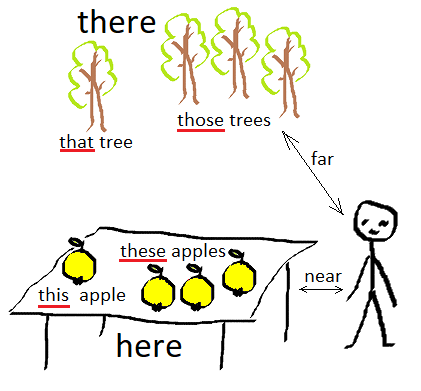

Лексика
Лексика
Лексика
| Лицо | ед.ч. | мн.ч. |
|---|---|---|
| 1-е | I am | we are |
| 2-е | you are | you are |
| 3-е | he/she/it is | they are |
Note
В русском языке глагол быть практически никогда не используется в настоящем времени. Например, мы не говорим "я есть врач", а говорим "я врач". В английском языке глагол to be присутствует всегда.
I am a teacher — я учитель
We are free — мы свободны
You are a doctor — ты/Вы доктор
You are students — вы студенты
My cat is cute — мой кот милый
He is also naughty — он также непослушный
The trees are green — деревья зеленые
They are also tall — они также высокие
| Лицо | Число | Именительный падеж | Объектный падеж | Притяжательное местоимение* |
|---|---|---|---|---|
| 1-е | ед. | I | me | my/mine |
| мн. | we | us | our/ours (наш, наша, ...) | |
| 2-е | ед./мн. | you | you | your/yours (твой, твоя, ...) |
| 3-е | ед. | he | him (его, ему) | his/his (его) |
| ед. | she | her (её, ей) | her/hers (её) | |
| ед. | it | it | its/its | |
| мн. | they | them (их, им) | their/theirs (их) |
* Указываются притяжательные местоимения с притяжательным словом и через "/" — без притяжательного слова. Например, this is my cat — это мой кот; this cat is mine — этот кот — мой. В первом случае притяжательное слово cat следует после притяжательного местоимения, во втором случае после притяжательного местоимения не следует притяжательное слово.
This is my backpack. — whose backpack? Mine. — Это мой рюкзак. — рюкзак чей? Мой.
This house is now yours. — Этот дом теперь твой/ваш.
My hat is blue and your hat is red => My hat is blue and yours is red.
Моя кепка голубая, а твоя кепка красная => Моя кепка голубая, а твоя – красная.
He is in the kitchen, please call him, I have found his watch — Он на кухне, пожалуйста, позови его, я нашла его часы.

Указание предметов
| Число | Здесь | Там |
|---|---|---|
| ед. | this | that |
| мн. | these | those |
Приведенные выше слова могут использоваться в качестве объектов (например, подлежащих или дополнений) и определений, например:
Указание места:
Слова here, there, everywhere используются в одноименной песне "Битлз"
| Слово | Перевод | Пример | Перевод примера |
|---|---|---|---|
| now | сейчас | I'm busy now | я сейчас занят |
| then | тогда | then I had lunch but now I can help you | тогда я обедал, но сейчас могу тебе помочь |
| then | затем | first wash your hands and then eat your food | сначала вымой руки, потом кушай |
| before | до | come before five o'clock | приходите до пяти часов |
| after | после | after Sunday comes Monday | за воскресеньем следует понедельник |
| sometimes | иногда | sometimes I | |
| ever | когда-либо | have you ever had a dog? | у тебя когда-нибудь была собака? |
| just | только что | he has just come | он только что пришёл |
| never | никогда | ||
| yet | ещё | ||
| already | уже | ||
| since | после того | ||
| for | в | ||
| lately | давно |